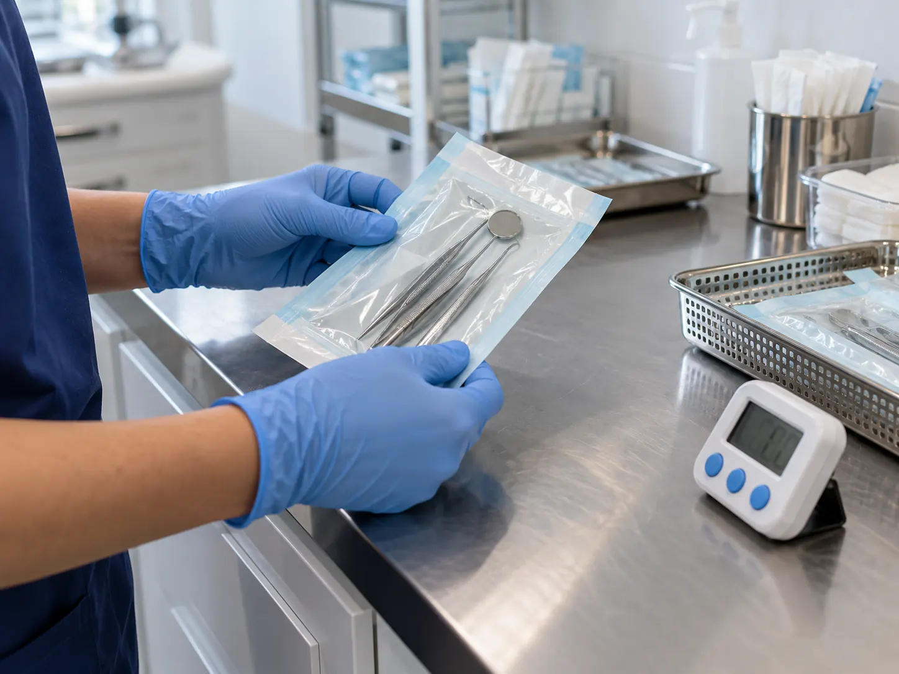
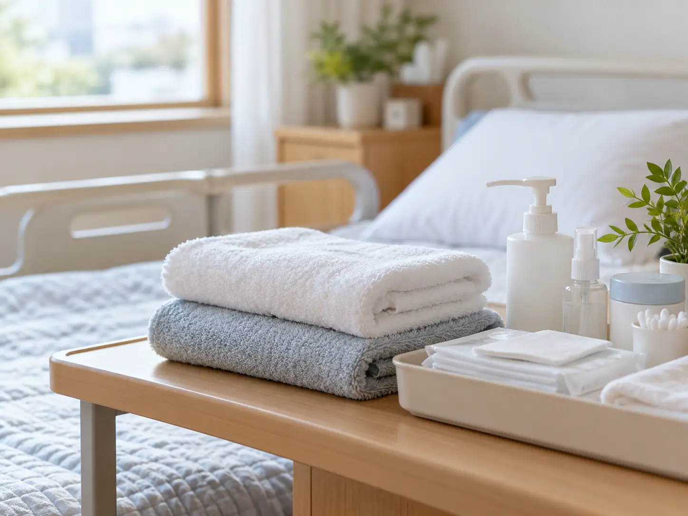

현재 확인
생활 관찰에서 회복 중 살펴볼 변화를 살피며 상담은 정해진 답을 고르는 시간이 아니라 본인에게 필요한 정보를 확인하고 다음 순서를 함께 조율하는 과정입니다.
생활 관찰 기록으로 회복 중 살펴볼 변화에 관해
생활 관찰에서 회복 중 살펴볼 변화를 살피며 상담은 정해진 답을 고르는 시간이 아니라 본인에게 필요한 정보를 확인하고 다음 순서를 함께 조율하는 과정입니다.
생활 관찰에 회복 중 살펴볼 변화에 필요한 질문으로 설명에서 이해되지 않은 용어는 그대로 넘기지 않고 쉬운 말로 다시 확인해 이후의 판단이 본인의 언어로 남도록 합니다.
생활 관찰 뒤에 회복 중 살펴볼 변화를 정리한 뒤 질문이 생기면 메모를 업데이트해 두었다가 정해진 채널로 확인하고, 급하게 판단해야 한다는 부담은 내려놓아도 됩니다.
생활 관찰에서는 회복 중 살펴볼 변화를 중심으로 상담은 정해진 답을 고르는 시간이 아니라 본인에게 필요한 정보를 확인하고 다음 순서를 함께 조율하는 과정입니다. 상담에서 남은 질문과 생활 기록을 다음 확인 때 함께 살펴볼 항목으로 정리해 둡니다.
생활 관찰에 남은 질문은 회복 중 살펴볼 변화에 맞춰 질문을 다음 상담 전에 정리해 주세요.
온라인 상담 시작생활 관찰에서 상담 안내를 다음 상담의 메모로 이어 갑니다.

